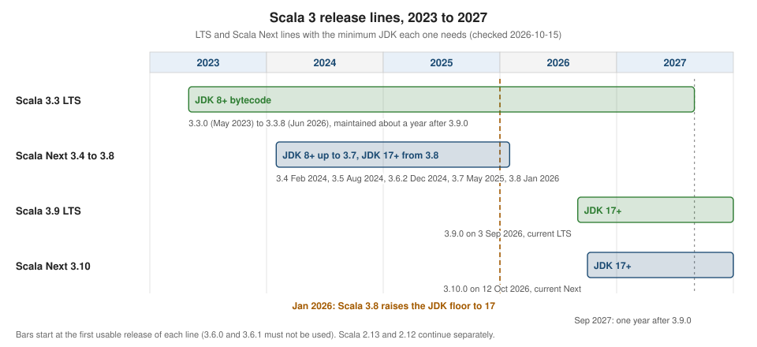

Getting Started & Versions
|
This content was generated with the assistance of AI and should be verified against the official documentation before being relied on in production. |
This page is written against Scala 3.10.0 (released 2026-10-12) and every program on it was run with Scala CLI 1.17.1 on JDK 26 on macOS, checked on 2026-10-15. It explains what Scala is for, what makes the language what it is, why the Scala 3 line exists, and how the release lines fit together, so that the choice of a version in the rest of the section is not a mystery. The next pages are Installing Scala and Hello World & @main Methods. The landing page, Scala, places this page in the section.
Every example in this section uses one small scenario, trailhead, a toolkit that plans hikes on a network of mountain
trails. This page only needs its smallest pieces: a Trail and a Difficulty.
What Scala is used for
Scala is a statically typed language that fuses object-oriented and functional programming. The name comes from "scalable": the same language is meant to serve a ten-line script and a large service. It runs on the JVM, in the browser and on Node.js through Scala.js, and as native code through Scala Native. In practice the language shows up in a few recurring jobs:
| Use | What it looks like in practice |
|---|---|
Backend services |
HTTP and messaging services on the JVM, from small microservices to large systems, using the Java ecosystem directly plus Scala libraries; see Web Servers with Cask and the ecosystem page for the frameworks built on Scala |
Data engineering |
big-data and streaming jobs, most visibly Apache Spark, which is written in Scala and exposes a Scala
API; the collections vocabulary ( |
Compilers and tools |
parsers, interpreters, static analysers and build tools; algebraic data types and pattern matching (see Enums and Pattern Matching) make syntax trees pleasant to write. The Scala 3 compiler is itself written in Scala |
Front ends and cross-platform code |
Scala.js compiles Scala to JavaScript, so shared domain code can run in the browser and on the server; see Scala.js & Scala Native |
Scripts and small tools |
single-file programs run with Scala CLI, with dependencies declared in the file; see Scala CLI and the Scala Toolkit pages starting at Files & Processes with OS-Lib |
High-level features
The official Scala 3 Book describes the language from "30,000 feet" with a short list of statements. Each one is a design decision with a consequence for the code you write, so it is worth reading them as a set.
| Feature | What it means |
|---|---|
High-level language |
no pointers or manual memory management, and with lambdas and higher-order functions you describe what you want rather than how to loop for it |
Concise, readable syntax |
type inference removes most annotations on locals; traits, classes and methods have a light syntax, and since Scala 3 indentation can replace braces (see Optional Braces & Indentation) |
Statically typed, but feels dynamic |
every expression has a type checked at compile time, yet inference, union types and anonymous functions keep the code free of ceremony |
Expressive type system |
generics with variance and bounds, union and intersection types, opaque types, match types and more; see Generics & Bounds and Union & Intersection Types |
Functional programming |
functions are values, data is immutable by convention, and case classes with pattern matching model algebraic data |
Object-oriented programming |
every value is an object, behaviour is organised in classes and traits, and traits give mixin composition instead of multiple inheritance of state |
FP and OOP fused |
functions for the logic and objects for the modularity; the standard library’s |
Contextual abstractions |
one family of features ( |
Runs on the JVM (and in the browser) |
compiled classes run on any JVM, the same code can target JavaScript and native code |
Java interoperability |
Scala calls Java libraries directly and Java can call Scala; see Using Java from Scala |
The following program shows several of those features in a dozen lines: an enum with a case that carries a value, a
case class, an extension method, a higher-order pipeline and a pattern match. Every construct has a page of its own
later in the section.
//> using scala 3.10.0
enum Difficulty:
case Easy, Moderate, Hard
case Alpine(grade: Int)
case class Trail(name: String, km: Double, ascent: Int, difficulty: Difficulty)
extension (t: Trail)
def hours: Double = t.km / 4 + t.ascent / 600.0
@main def taste(): Unit =
val trails = List(
Trail("Valle Verde", 6.5, 200, Difficulty.Easy),
Trail("Pico Norte", 11.0, 1200, Difficulty.Alpine(2)),
Trail("Lago Azul", 8.0, 450, Difficulty.Moderate)
)
val long = trails.filter(_.hours > 3).map(_.name)
println(long)
trails.foreach: t =>
val label = t.difficulty match
case Difficulty.Alpine(g) => s"alpine grade $g"
case other => other.toString.toLowerCase
println(f"${t.name}%-12s $label")Saved as Taste.scala and started with scala run Taste.scala, it prints:
List(Pico Norte)
Valle Verde easy
Pico Norte alpine grade 2
Lago Azul moderateThe walking-time formula is a simplified Naismith’s rule (4 km/h plus one hour per 600 m of ascent), enough for the scenario. Source: Scala 3 Book: Scala Features.
Compared with Java, the same program needs no getters, no equals/hashCode/toString boilerplate (the case class
generates them) and no visitor to branch on the kind of difficulty. Compared with Kotlin, which has data classes, when
and extension functions, the shape is similar; Scala’s differences are the richer type system, given/using for
type-class style code and one language that spans functional and object-oriented styles without leaning on either.
Why Scala 3
Scala 3 (first released as 3.0.0 in 2021) is a major revision of the compiler and the language, not a new language. The Scala 3 Book lists ten reasons to use Scala and Scala 3 in particular:
-
FP and OOP are fused in one language.
-
The language is statically typed but often feels dynamically typed, more so in Scala 3 with union types.
-
The syntax is concise but readable.
-
Implicits, a defining feature of Scala 2, were improved and simplified in Scala 3.
-
Scala integrates seamlessly with Java, so mixed projects and the existing Java libraries are available.
-
Scala runs on the server and, through Scala.js, in the browser.
-
The standard library has dozens of ready-made functional methods that remove most hand-written loops.
-
Good practice is built in: immutability, anonymous functions, higher-order functions, pattern matching and classes that cannot be extended by default (in Scala 3 a class must be marked
opento be extended outside its file, see Inheritance: Abstract, Sealed, Open & Final). -
The ecosystem offers modern functional libraries.
-
The type system is strong.
On top of that list, the official "New in Scala 3" page groups the changes into a more principled type system (with
better inference and overload resolution), a quieter syntax, and contextual abstractions that express intent
(using, given, extension methods, Conversion, context functions) instead of a single mechanism, implicits. The table
later on this page links each of them to the page that explains it.
Source: Scala 3 Book: Why Scala 3? and New in Scala 3.
Versions and release lines
Scala 3 publishes two kinds of release line, described in the 2022 compatibility plans of the Scala team:
- Scala Next
-
receives regular minor releases (3.4, 3.5, …) with new language features, tooling work and library changes. This is the default for applications. At the time of writing it is 3.10.0.
- Scala LTS
-
receives patch releases focused on bug fixes, diagnostics and carefully selected quality-of-life changes, under the compatibility guarantees of the line. It is the recommended target for libraries and conservative production users. The current LTS is 3.9.0 (3 September 2026); the previous one is 3.3.x, latest 3.3.8 (10 June 2026).
The figure shows how the lines overlap.

The compatibility rules that make this model work are worth knowing, because they decide which compiler version a project can use:
-
Scala 3 guarantees backward output compatibility between all releases, and forward compatibility between patch releases of one minor line. A project compiled with a later minor release cannot be consumed by an earlier one: as the 3.9 announcement puts it, artifacts built with Scala 3.9 cannot be consumed by Scala 3.3 projects, so moving a library from 3.3 LTS to 3.9 LTS is a minor-version publishing decision.
-
Treat the compiler version as any other dependency: bumping a patch is a no-brainer, bumping a minor deserves the same care as any dependency minor, and you should not cross-compile between Scala 3 versions.
-
The 3.10 release is the first of the new Scala Next series. It stabilizes SIP-67, moves three SIPs behind
-previewand starts removing legacy features that were deprecated for several minor releases (for exampleA with Bfor intersection types is now an error). Cross-compilation between Scala 2 and Scala 3.10 is no longer supported, so libraries that cross-build for Scala 2.13 stay on 3.9 LTS. Binary compatibility is preserved: libraries compiled with earlier Scala 3 versions keep working on 3.10.
| Line | Latest release at the check date | Minimum JDK | Remarks |
|---|---|---|---|
Scala 3.10 (Scala Next) |
3.10.0, 12 October 2026 |
17 |
first Scala Next after 3.9 LTS; removes legacy syntax; |
Scala 3.9 (LTS) |
3.9.0, 3 September 2026 |
17 |
the recommended baseline for library authors; stabilizes SIP-71 ( |
Scala 3.8 |
3.8.4 (3.8.0 was announced on 22 January 2026) |
17 |
standard library compiled with Scala 3; avoid 3.8.0, which had a runtime regression fixed in 3.8.1 |
Scala 3.7 |
3.7.4 |
8 |
stabilizes named tuples (SIP-58) |
Scala 3.3 (previous LTS) |
3.3.8, 10 June 2026 |
8 |
kept JDK 8 compatible bytecode; maintained for one year after 3.9.0 |
Scala 2.13 |
2.13.18, 24 November 2025 |
8 |
the Scala 2 line still in wide use; see the Scala 2 note below |
Scala 2.12 |
2.12.21, 11 December 2025 |
8 |
maintenance for sbt plugins and older code |
A few releases in the table deserve a note:
-
3.6.0 and 3.6.1 must never be used. An accident during the 3.6.0 release candidate published artifacts versioned as 3.6.0 to the immutable Maven repository; 3.6.1 was a hotfix to stop tools from picking the broken version, and 3.6.2 (10 December 2024) is effectively "3.6.0".
-
3.8.0 had a runtime regression that could cause JVM linkage errors; the official advice is to use 3.8.1 or later.
-
3.3 LTS to 3.9 LTS is not a patch bump. 3.9 is a new LTS baseline that also includes everything from 3.4 to 3.8, and libraries built with it cannot be consumed by 3.3 projects. Choose 3.3 only while consumers are stuck on it.
The JDK floor
Scala 3.3 LTS through 3.7 support JDK 8 and above. Starting with Scala 3.8 the minimum is JDK 17, and the 3.9 LTS and
3.10 lines keep that floor. The Scala team required it to support JDK 26 and later, which restrict the
sun.misc.Unsafe functionality that the old lazy-val implementation used. The 3.3 LTS line still produces JDK 8
bytecode, and the 3.3.8 release added a -Yfuture-lazy-vals flag that activates the new lazy-val implementation for
users who need to keep older JVMs but want to be safe on newer ones (it requires JDK 9 or later).
JDK 17, 21 and 25 are all good choices both for compiling and for running Scala code. The official compatibility table lists the minimum Scala versions per JDK: for JDK 25 that is 3.3.7, 3.7.1 or 3.9.0 depending on the line, for JDK 26 it is 3.3.8, 3.8.0 or 3.9.0, and for JDK 27 the table lists 3.10.0 and marks it as forthcoming. The details and the sbt and Scala CLI minimum versions are in Versions, Compatibility & JDKs.
Scala 2.13 and 2.12
Scala 2 is still maintained: 2.13 is the line most Scala 2 projects are on, and 2.12 remains for older code and sbt
plugins. Scala 3 can use libraries built for 2.13 (in sbt, .cross(CrossVersion.for3Use2_13) selects such a dependency), which
is how the Scala 3 ecosystem was bootstrapped. Details are in
Scala 2 & Scala 3 Compatibility and
Migrating from Scala 2. For new code, choose Scala 3.
Checking the version on your machine
The scala command of the 3.10.0 distribution is Scala CLI, which runs programs with the Scala version you select. The
program below prints the Scala library version it was compiled against and the Java specification version it runs on,
which are the two numbers to check when something is not as expected.
//> using scala 3.10.0
@main def versions(): Unit =
println(s"Scala library: ${scala.util.Properties.versionNumberString}")
println(s"Java runtime : ${System.getProperty("java.specification.version")}")$ scala -version
Scala code runner version: 1.17.1
Scala version (default): 3.10.0
$ scala run Versions.scala
Scala library: 3.10.0
Java runtime : 26The //> using scala line pins the compiler for this file. To follow the current LTS line instead, use
//> using scala lts (or 3.lts, or 3.9.lts), which Scala CLI 1.17.1 resolved to 3.9.0 at the check date;
//> using scala 3.3.lts selects the newest release of the previous 3.3 LTS line. Installation options are in
Installing Scala. Source:
Scala download page and
JDK Compatibility: Scala 3.
New in Scala 3
The table lists the major additions with the release in which each became stable (or its current status) and the page
that covers it. "On 3.9 LTS" says whether the feature can be used without -preview or -language:experimental flags on
the LTS line; features newer than 3.3 LTS are marked with their release throughout the section.
| Feature | Stable in | On 3.9 LTS | Page |
|---|---|---|---|
Optional braces and indentation syntax, new control syntax, creator applications ( |
3.0 |
yes |
Optional Braces & Indentation, Packages, Imports & Top-Level Definitions |
|
3.0 |
yes |
|
Enums and generalized ADTs |
3.0 |
yes |
|
Trait parameters, |
3.0 |
yes |
|
Union and intersection types |
3.0 |
yes |
|
Opaque types |
3.0 |
yes |
|
|
3.0 |
yes |
|
Polymorphic and dependent function types |
3.0 |
yes |
|
Type lambdas, match types |
3.0 |
yes |
|
|
3.0 |
yes |
Givens & Using Clauses, Extension Methods, Context Functions |
Type class derivation with |
3.0 |
yes |
|
Multiversal equality ( |
3.0 |
yes |
|
|
3.0 |
yes |
|
Clause interleaving (SIP-47), new context bound and given syntax (SIP-64) |
3.6 |
yes |
|
Named tuples (SIP-58) |
3.7 (experimental in 3.5) |
yes |
|
Better fors (SIP-62) and |
3.8 |
yes |
|
|
3.9 (preview in 3.8) |
yes |
|
Strict-equality pattern matching without |
3.10 (experimental before) |
no, experimental |
|
Flexible varargs (SIP-70) |
experimental |
experimental |
|
|
preview in 3.10 |
no, at most experimental |
|
Partial function literals with parentheses (SIP-74) |
preview in 3.10.0 |
no |
|
Removal of legacy syntax such as |
3.10 |
no, deprecated only |
The full release-by-release history, with links to every announcement, is in Release History & What’s New, and the lifecycle that moves a feature from experimental to preview to stable is in Language Evolution: SIPs, Preview & Experimental. Source: New in Scala 3, Scala 3.10 released and Scala 3.9 LTS released.
Where the books are outdated
The online Scala 3 Book and the Tour of Scala describe the language as a whole and do not tie each feature to the release that introduced it, and printed books were fixed at one Scala 3 minor release. When you read them, remember:
-
They usually predate the LTS/Next model with 3.9 LTS, so "which Scala version?" has a different answer today: 3.10 for applications, 3.9 LTS for libraries, 3.3 LTS only while consumers are stuck on it.
-
They show JDK 8 or 11 as supported; since Scala 3.8 the floor is JDK 17.
-
They do not cover Scala CLI as the
scalacommand, the official Scala Toolkit, named tuples (stable in 3.7), better fors (3.8),into(3.9), or the removal of legacy syntax in 3.10. -
Several Scala 2 forms the books still show (implicit classes,
withfor intersections, wildcard_for types) have Scala 3 replacements described in the pages linked above.